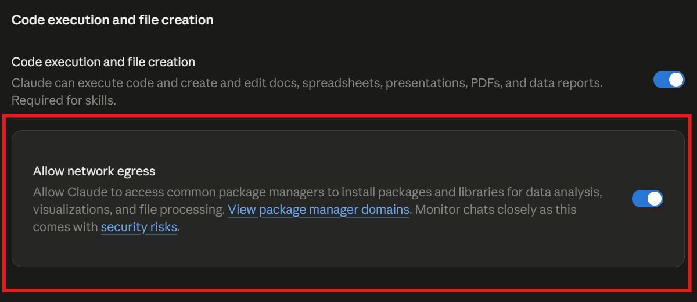

Dice Roguelife
주사위가 정한 인생
주사위가 세계, 종족, 신분, 재능을 정해 주고, AI가 그 삶을 웹소설처럼 들려주는 텍스트 로그라이크예요.

설치와 업데이트
Claude 앱에서 해요. 폰도 돼요.
준비 (처음 한 번만)
- 폰 브라우저(앱 말고)로 claude.ai 설정 → 기능(Capabilities)을 열어요. 로그인이 안 되어 있으면 먼저 로그인하세요.
- 코드 실행 및 파일 생성을 켜요.
- 네트워크 허용(Allow network egress)을 켜요. 이 항목은 앱 설정에는 없어서 브라우저에서만 켤 수 있어요. 한 번 켜면 앱에도 그대로 적용돼요. 계정에 따라 기본으로 꺼져 있어요.
- 앱으로 돌아와 새 대화를 열어서 진행하세요. 이미 열려 있던 대화에는 바뀐 설정이 적용되지 않아요.
- 새 대화에서도 막히면 설정이 반영되기까지 몇 분 걸릴 수 있어요. 5분쯤 뒤에 다시 시도하세요.

설치
새 대화에 아래 문구를 그대로 붙여 넣으세요.
아래 링크의 최신 버전 dice-roguelife.html 파일을 받아서, 내 아티팩트로 게시해 줘. db, sample, user, assets, downloads 기능이 모두 필요해. https://github.com/wonjoonSeol-WS/dice-roguelife/releases/latest/download/dice-roguelife.html
게시된 링크를 열면 바로 플레이할 수 있어요. 처음 실행할 때 Claude 연결 확인 창이 떠요. 확인(OK)을 눌러야 게임이 Claude를 불러 이야기를 쓸 수 있어요.
저장 데이터는 아티팩트 링크에 묶여 있어요. 새 아티팩트를 만들면 저장이 빈 채로 시작하니, 꼭 쓰던 링크에 덮어쓰세요. 업데이트하면 화면이 새로고침되니 쓰던 입력은 먼저 보내 두세요. 게임 안 ⚙ 설정 → 업데이트 확인에서도 같은 문구를 만들어 줘요.
컴퓨터 도구(bash)에서 아래 명령으로 파일을 받아 줘. 웹 읽기(web fetch)는 쓰지 마. curl -L -o dice-roguelife.html https://github.com/wonjoonSeol-WS/dice-roguelife/releases/latest/download/dice-roguelife.html 받은 파일이 수백 KB짜리 HTML인지 확인한 다음, 새 아티팩트를 만들지 말고 아래 내 아티팩트 링크에 덮어써 줘. 기능은 db, sample, user, assets, downloads, artifact로 맞춰 줘. 내 아티팩트: (여기에 내 아티팩트 링크)
- 맨 아래 줄의 (여기에 내 아티팩트 링크)를 쓰던 아티팩트 주소로 바꿔서 보내세요.
- 새 버전과 바뀐 점은 Releases에서 볼 수 있어요.
- 불안하면 먼저 저장 탭에서 저장 파일을 내보내 두세요.
막혔을 때
- "GitHub가 자동 접근을 막았다"고 하거나 파일을 받지 못했다고 하면 웹 읽기로 받으려 한 거예요. 아래 문구로 다시 보내세요. 컴퓨터 도구(bash)로 받게 하는 문구예요.
설치 (웹 읽기가 막힐 때)
컴퓨터 도구(bash)에서 아래 명령으로 파일을 받아 줘. 웹 읽기(web fetch)는 쓰지 마. GitHub가 막아서 실패해. curl -L -o dice-roguelife.html https://github.com/wonjoonSeol-WS/dice-roguelife/releases/latest/download/dice-roguelife.html 받은 파일이 수백 KB짜리 HTML인지(오류 문구가 아닌지) 확인한 다음, db, sample, user, assets, downloads, artifact 기능을 켜서 그대로 내 아티팩트로 게시해 줘.
403 host_not_allowed/Host not in allowlist: github.com가 나오면 네트워크 허용이 꺼져 있거나, 켜기 전에 시작한 대화예요. 브라우저에서 설정을 확인하고 새 대화에서 다시 해 보세요. 켠 직후라면 반영에 몇 분 걸릴 수 있으니 5분 뒤 재시도해 보세요.- 새 대화에서도 막히면 회사나 학교 계정에서 관리자가 네트워크를 막아 뒀을 수 있어요. 직접 고른 도메인만 허용하는 설정이라면
github.com과release-assets.githubusercontent.com을 추가해 주세요. - 그래도 안 되면 브라우저로 Releases에서
dice-roguelife.html을 받은 뒤, 채팅에 파일을 첨부하고 "이 파일을 db, sample, user, assets, downloads, artifact 기능을 켜서 내 아티팩트로 게시해 줘"라고 보내세요.
문구의 기능은 왜 필요한가요?
| 기능 | 하는 일 | 없으면 |
|---|---|---|
sample | 게임이 Claude를 불러서 이야기를 쓰게 해요. 비용은 내 구독에서 나가요. | 게임이 시작되지 않아요. |
db | 저장 파일, 설정, 인생 전당, 이미지 목록을 저장해요. | 새로고침하면 다 사라져요. |
assets | 올린 캐릭터와 배경 이미지 파일을 보관해요. | 이미지를 올릴 수 없어요. |
user | 누가 쓰는지 구분해서 저장을 사람마다 나눠요. | 저장 공간이 섞이고, 주인 전용 기능을 못 써요. |
downloads | 이야기, 저장 파일, 이미지 팩을 파일로 내려받아요. | 내보내기 버튼이 동작하지 않아요. |
처음부터 다섯 가지를 모두 요청해야 일부 기능이 조용히 빠지는 일이 없어요.
시작하기
이름과 세계만 고르면 돼요. 나머지는 주사위가 정해 줘요.


- 죽으면 인생 결산이 나오고, 그 뒤에 다른 세계의 다른 몸으로 회귀해요. 지난 삶의 능력도 하나 물려받아요.
- 이 게임은 claude.ai 아티팩트에서만 돌아가요. 내 아티팩트로 띄우는 방법은 README에 있어요.
- 입력할 때 말과 행동은 그대로 쓰세요. 속마음이나 상황 설명만
*별표*안에 적으면 돼요. 별표 안의 내용은 장면 속 누구도 듣지 못해요.
주사위 켜기 / 끄기
새 삶을 시작할 때 한 번 고르면 돼요. 시작하고 나면 그 저장에서는 바꿀 수 없어요.

켜면 스릴이 있어요
- 켜면 더 어렵고 스릴 있어요.
- 선택지 주사위는 위험한 행동이나 확률이 붙은 선택지가 성공할지 실패할지 정해요.
- 생활 주사위는 내 행동과 상관없이 가끔 행운이나 불운을 가져와요. 억울한 불운이 올 때도 있어요.
- AI가 아니라 코드가 굴려서 결과가 한쪽으로 쏠리지 않아요.
- d100을 굴리고, 숫자가 낮을수록 좋아요. 성공 확률이 60%면 60 이하가 나와야 성공이에요.
끄면 자유로워요
- 주사위 없이 개연성에 따라 이야기가 흘러가요.
- 내가 원하는 전개를 대체로 따라가고, 일부러 불리하게 꼬지 않아요.
- 선택지에 확률이 붙지 않아요. 선택지는 참고용 제안일 뿐이에요.
- 내가 쓴 대로 이야기가 흘러가는 롤플레이를 원하면 이쪽이 잘 맞아요.
- 다만 없는 아이템이나 힘이 있다고 선언하면 허풍으로 처리돼요. 켜든 끄든 똑같아요.


/판정으로 방금 판정의 이유 묻기

/판을 치면 /판정이 떠요.
/판정은 주사위를 새로 굴리는 명령이 아니에요. 방금 판정이 왜 그렇게 나왔는지 물어보는 명령이고, 게임 속 시간은 흐르지 않아요.- 이유가 규칙이나 기록과 맞지 않으면 AI가 실수를 인정하고 바로잡을 수 있어요.
- 판정이 이상하게 서술됐다면 먼저 이 명령으로 물어보세요. 주사위 결과 자체는 코드가 정한 값이에요.
내 설정으로 시작 (자유 설정)
주사위 대신 종족, 신분, 재능, 주변 인물을 직접 정할 수 있어요.

- 이름은 내 캐릭터의 이름이에요. 성별은 남, 여, 기타 중에서 골라요.
- 세계관, 등장인물 칸에는 인물 이름과 역할을 문장으로 적어요. 예: "소꿉친구 한서윤이 옆집에 산다. 겉으론 퉁명스럽지만 늘 나를 챙긴다."
- 적은 내용은 유저 노트에 들어가서 첫 장면부터 반영돼요. 나중에 기억 탭에서 고칠 수도 있어요.
- 플레이어 설정에는 외형, 성격, 말버릇, 배경 이야기를 적어요. "다음 삶의 기본값으로 저장"도 할 수 있어요.
- 성좌는 무작위, 있음, 없음 중에서 골라요. 자세한 내용은 아래 성좌 항목을 보세요.
상태창과 칭호
위쪽 상태 바를 누르거나 /상태를 입력하면 열려요.


- 기본값인 자동은 헌터물, VR MMO, 탑, 아카데미처럼 시스템이 있는 세계에서만 각성 전에 숫자를 숨겨요. 다른 세계에서는 처음부터 보여요.
- ⚙ 설정 → 상태창 공개에서 자동, 항상 공개, 모든 세계에서 각성 후 공개, 숨김 중에 고를 수 있어요. 숨김은 각성해도 숫자 없이 이야기로만 알려 줘요.
- 칭호를 얻을 때 자리가 남아 있으면 저절로 켜져요. 효과는 칭호 옆에 나와요.
성좌 (후원자) 옵션
나를 지켜보는 존재가 있는 삶인지 정해요. 자유 설정에서 직접 고를 수 있어요.


/성좌로 관전 갤러리를 볼 수 있어요.- 성좌가 있는 삶은 채널이 처음엔 닫혀 있어요. 각성하거나 큰 사건이 생기면 열려요.
- 열리기 전에
/성좌를 치면 "아직 당신을 보지 않아요"라고 나와요. 성좌가 없는 삶이면 "이 세계에는 성좌가 없어요"라고 나와요. - 주사위로 시작하면 세계마다 정해진 확률로 성좌가 있을지 정해져요. 헌터물과 탑은 성좌가 흔한 편이에요.
- ADMIN의 말투는 ⚙ 설정의 ADMIN 페르소나에서 바꿀 수 있어요.
명령어, 게시판, 메신저
입력창에 /를 치면 목록이 떠요. 이야기 속 화면을 불러오는 명령어예요.

/ 한 글자만 치면 전체 목록이 떠요. 눌러서 고르면 돼요.| 명령 | 별칭 | 하는 일 |
|---|---|---|
/뉴스 | /news | 세계의 소식지를 봐요 |
/의뢰 | /quest /q | 의뢰 게시판을 봐요 |
/갤 | /board /gallery /dc | 커뮤니티 게시판을 봐요 (DC 스타일) |
/성좌 | /star /성좌갤 | 성좌들의 관전 갤러리를 봐요 (성좌가 있는 삶에서, 채널이 열린 뒤) |
/톡 | /chat /talk /dm | 메신저로 메시지를 보내요 (카톡 스타일) |
/판정 | /why /근거 | 판정 근거를 물어봐요 (게임 속 시간은 안 흘러요) |
/스킬 | /skill /skills /기술 | ADMIN에게 스킬 목록과 비용을 들어요 (게임 속 시간은 안 흘러요) |
/상태 | /status /st | 상태창을 열어요 |
커뮤니티 게시판 /갤

메신저 /톡 (카카오톡 느낌)

/톡 할 말로 보내면 상대가 답해 주고, 답장하기로 대화를 이어 갈 수 있어요.
/뉴스
/의뢰카카오톡과는 관련 없는 비공식 프로젝트예요. 말풍선 색만 비슷하게 만들었어요.
설정 (⚙)
화면 오른쪽 위의 톱니바퀴를 누르면 열려요. 맨 위에 현재 버전과 업데이트 확인 버튼이 있고, 눈에 보이는 옵션은 아래처럼 바뀌어요.


바꾸면 이렇게 보여요


모든 옵션 한 줄 설명
| 옵션 | 고를 수 있는 값과 설명 |
|---|---|
| 서술 모델 | 빠름, 기본, 깊이 있게 중에서 골라요. 요금제에 따라 한 단계 낮은 모델로 바뀔 수 있어요 ("지금 확인") |
| 서술 분량 | 짧게, 모델에 맡김, 길게 중에서 골라요 |
| 최근 기억 | 원문 그대로 넣는 분량이에요. 작게 20KB, 보통 40KB(기본), 크게 80KB, 아주 크게 150KB 중에서 골라요. 그보다 오래된 내용은 요약해서 넣어요. 클수록 기억은 좋아지지만 느려지고 사용량도 빨리 줄어요 |
| 플레이 언어 | 한국어, English, 日本語 중에서 골라요. 이야기, 대사, 선택지, 위젯이 모두 고른 언어로 나와요 |
| 내 입력 문장 교정 보기 | 내가 쓴 문장의 맞춤법과 문법을 한 줄로 보여 줘요 |
| ADMIN 페르소나 | 관전하는 성좌(기본), 성좌 딜러, 무심한 기록관, 과몰입 팬 성좌, 직접 입력 중에서 골라요 |
| 엔터 키 | 자동(PC는 보내기, 폰은 줄바꿈), 엔터로 보내기, 엔터는 줄바꿈 중에서 골라요. 이 브라우저에만 저장돼요 |
| 외부 지식 억제 | 현실이나 전생의 지식이 단번에 힘이나 돈이 되지 않게 해요. 기본값은 켜짐이고, 삶을 시작할 때 정해지면 바꿀 수 없어요 |
| 도박꾼의 초석 | 매 턴 잭팟(무조건 성공+큰 보상) 또는 나락(무조건 실패+큰 페널티)이 뜰 수 있어요. 확률은 10%, 15%, 25% 중에서 골라요. 시작할 때 정해지면 바꿀 수 없어요 |
| 상태창 공개 | 자동, 항상, 모든 세계에서 각성 후, 숨김 중에서 골라요 |
| 성장 속도 | 자동, 짠맛, 보통, 후함 중에서 골라요. 스탯을 얼마나 후하게 주는지 정해요 |
| 의뢰, 뉴스 스타일 | 위의 전후 화면을 보세요 |
| 위젯 다크 모드 | 톡과 게시판 위젯도 어둡게 바꿔요 |
| 효과음 | 운명 공개, 경지 상승, 칭호 팡파레, 스킬, 아이템, 의뢰 완료, 사망, 결산 때 소리가 나요 |
| 업데이트 확인 | 새 버전으로 바꿔 달라는 요청 문구를 만들어 줘요 (아래 참고) |


이미지 태깅 시스템
초상화와 배경을 올리면 앱이 장면에 맞춰 알아서 붙여요. 이미지가 없어도 텍스트로 플레이할 수 있어요.

앱이 그림을 고르는 원리
인물
- 세트 하나가 한 사람이에요. 표정(emotion)은 그 세트 안에서 장면에 맞는 얼굴을 골라요.
- AI가 인물의 성별, 역할, 비중, 외형 단어, 소속을 설명해 줘요.
- 코드가 그 설명을 세트의 태그, 역할, 분위기와 단어 단위로 비교해서 점수를 매겨요.
- 정체 태그
faction:은빛기사단이 맞으면 점수를 크게 더해 줘요. - 세계(worlds)와 성별이 맞는 세트만 후보가 돼요. 많은 세트에 공통으로 들어 있는 단어(hair, smile)는 점수에 반영하지 않아요.
- 비중(tier)이 비슷해도 점수를 더해요. 비중은 엑스트라, 조연, 주요로 나뉘어요.
- 한 번 정해진 얼굴은 그 삶이 끝날 때까지 같은 사람에게 계속 쓰여요.
배경
- AI가 장소를 영어 단어로 설명해요. 장소 종류를 먼저 적어요 (
station, locker). - 코드가 이 세계의 배경 중에서 찾아봐요. 종류 단어가 전부 들어 있어야 후보가 돼요.
- 시간대(day, night, sunset)에 맞는 버전을 골라요.
- 애매하면 엉뚱한 그림을 붙이느니 그림을 아예 안 붙여요.
- 가 본 곳에는 같은 그림을 다시 써요.
파일 이름 규칙

| 종류 | 이름 | 예 |
|---|---|---|
| 캐릭터 | {세트}_{표정}.png | female1_smile.png |
| 같은 표정 둘째 장 | {세트}_{표정}_2.png | female1_smile_2.png (smile2도 지금은 인식해요) |
| 다른 의상 | {세트}_{표정}_{의상}.png | female1_smile_armor.png |
| 배경 | bg_{장소}_{시간}.png | bg_tavern_night.png, bg_castle-gate_day.png |
| 그림자 | shadow_{male|female}_{표정}.png | shadow_male_neutral.png |
| 게임 마스터 | admin_{표정}.png | admin_smirk.png |
| 연출 (주사위) | dice.png dice_success.png dice_fail.png fx_*.png | 대성공이나 대실패일 때만 나와요 |
표정은 neutral smile joy anger sadness surprise smirk shy fear serious crying determined 중 하나로 써요. 이름이 규칙에 맞지 않으면 올릴 때 물어봐요. 같은 파일(내용이나 이름이 같은 것)을 다시 올리면 건너뛰어요.
tags.json
- 이미지 탭 → tags.json 가져오기를 누르면 세트 정보와 태그를 한 번에 넣을 수 있어요.
- sets: gender(male/female/other), worlds, role, vibe, look, tier(extra/minor/major), tags, name, aliases
- images: 파일 이름별 emotion, tags, worlds
- backgrounds: 파일 이름별 place, time, mood, tags, worlds
- 태그는 이렇게 써요. 묘사는 영어 소문자로 3~6개 적고, 고유명사만 원래 언어로 적어요. 정체 태그는
key:value형태예요 (예:faction:사천당가).
팩 내보내기
- 팩 내보내기는 이미지를 올릴 때 쓰는 이름으로 zip에 담고 tags.json까지 넣어서 내려받아요. 다른 아티팩트나 친구에게 그대로 옮길 수 있어요.
- 태그만 내보내기는 이미지 없이 tags.json만 내려받아요.
- 이미지는 아티팩트마다 따로 저장돼요. 그래서 새 링크로 옮길 때는 이 팩을 다시 올리면 돼요.
Claude에게 정리 맡기기 (프롬프트)
이미지 폴더를 Claude(Cowork 등)에 주고 아래 프롬프트를 붙여 넣으면, 이름 짓기와 세트 묶기, tags.json 만들기까지 해 줘요. 먼저 계획(PLAN.md)을 보여 주고 내가 확인하면 진행해요.
프롬프트 펼치기 / 복사
Organize and tag the images in this folder for the game "Dice Roguelife" (주사위가 정한 인생).
Goal: group images of the same character into "sets", name every file with the game's
convention, and write a tags.json the app can import (이미지 tab -> import).
Rules
1. Do NOT modify or delete the originals. Copy everything into ./organized/.
2. First look at every image and write a plan to ./organized/PLAN.md
(old filename -> new filename, plus tags). Show me a summary and wait for my OK
before copying or renaming anything.
3. If ./existing_filenames.txt exists (optional), it lists files already in my game library.
New names must never collide with it; continue set numbers after the highest one there.
4. Also write ./organized/MAPPING.csv with two columns: original_filename,new_filename.
Characters (portraits or sprites of a person or creature)
- Group images of the same character (same face, hair, outfit design) into one set.
- Set names: female1, female2, male1, male2, ... (creature1 for non-humans).
Letters, digits and hyphens only.
- Filename: {set}_{emotion}.{ext}, e.g. female1_smile.png
- Emotion must be one of: neutral, smile, joy, anger, sadness, surprise, smirk,
shy, fear, serious, crying, determined. Pick the closest one.
- Two images with the same emotion in a set: add a number after an underscore,
female1_smile_2.png (never female1_smile2.png; the app would not recognize the emotion).
- Alternate outfit: add it after the emotion, female1_smile_armor.png
- If a name is written in the image, read it exactly. Put the in-game Korean name in
"name" and the original spelling in "aliases". If unreadable, do not guess; flag it.
Backgrounds (scenes without a main character)
- Filename: bg_{place}_{time}.{ext}, e.g. bg_tavern_night.png, bg_castle-gate_day.png
- place: lowercase English, hyphens between words. time: day, sunset, night or indoor.
- Two backgrounds with the same place and time: add a number, bg_alley_day2.png
- A specific landmark (e.g. a school auditorium) goes in tags, not in a new field.
Effects (dice or effect art that is neither a character nor a scene)
- Name them dice.png, dice_success.png, dice_fail.png, or fx_{what}.png. No tags needed.
Skip files that are already named as system assets: shadow_*, admin_*, dice*, fx*.
Worlds (for "worlds", 0 to 3 that clearly fit; empty array if it fits anywhere):
hunter, apoc, academy, tower, vrmmo, fantasy, rofan, murim, palace, cyber, monster
Tags
- Descriptive tags: lowercase English, 3 to 6 (hair, outfit, props, mood; for backgrounds:
place, time of day, weather, mood).
- Identity tags (optional): key:value, key in English, value is a proper noun kept in its
original language, e.g. faction:사천당가
- Only proper nouns stay in their own language; everything else is English.
tags.json (keyed by the NEW filenames)
{
"sets": {
"female1": {"gender": "female", "worlds": ["fantasy"], "role": "knight",
"vibe": "stern, loyal", "look": "silver hair, blue armor",
"tier": "major", "tags": ["silver hair", "knight"]}
},
"images": {
"female1_smile.png": {"emotion": "smile", "tags": ["smile", "armor"], "worlds": ["fantasy"]}
},
"backgrounds": {
"bg_tavern_night.png": {"place": "tavern", "time": "night", "mood": ["lively", "warm"],
"tags": ["wooden tables", "lanterns"], "worlds": ["fantasy"]}
}
}
- gender: male, female, or other (for non-humans).
- tier: extra, minor or major (how prominent the face is).
- Keep role, vibe and look short; the app joins them into one line of at most 120 characters.
- "name" and "aliases" only for sets with a readable name in the image.
Also
- If one image contains several characters or a grid of expressions, flag it in PLAN.md
instead of guessing.
- Flag duplicates or near-duplicates.
- At the end, print a short summary: number of sets, images per set, backgrounds per world,
and everything flagged.
그림자 (shadow)


shadow_male 세트예요. 그림자가 켜지고 배역이 전용 그림자로 바뀌어 있어요.- 무엇인가요? 얼굴 없는 실루엣 세트예요. 여러 배경 인물이 함께 써요.
- 어디에 쓰이나요? 엑스트라(지나가는 사람)에게 공용 실루엣이 붙어요. 정체를 숨긴 화자도 실루엣으로 나와요. 조연이나 주요 인물에게는 쓰지 않아요.
- 만드는 방법 1: 파일 이름을
shadow_male_neutral.png,shadow_female_2.png처럼 지어요.shadow,generic,silhouette접두사를 쓸 수 있고, 성별별로shadow_male,shadow_female,shadow_other세트가 자동으로 만들어져요. - 만드는 방법 2: 아무 세트 카드에서 그림자를 체크해요. 그 세트는 실루엣 전용이 되어서 실제 얼굴로는 쓰이지 않아요.
shadow_이름의 세트와 고정 이름이 있는 세트는 체크할 수 없어요. - 제외를 체크하면 그 세트는 자동으로 누구에게도 배정되지 않아요.
- 왜 올려 두나요? 엑스트라용 얼굴이 다 떨어지면 "엑스트라에게 줄 얼굴이 다 떨어졌어요. 그림자(shadow_)나 엑스트라 이미지를 더 올리면 다시 붙어요"라는 안내가 떠요. 그림자를 몇 장 올려 두면 해결돼요.
잘못 등록된 이미지 고치기


- 종류, 세트, 표정이 틀렸다면 카드의 드롭다운에서 바꾸세요.
- 태그가 틀렸다면 태그 칸에서 고치거나 ✕로 지우세요. 영어가 아닌 태그는 태그 영어로 버튼으로 한 번에 바꿀 수 있어요.
- 소속(문파, 가문, 회사)을 태그로 만들고 싶다면 소속 태그 뽑기를 누르세요. 적용하기 전에 목록을 보여 줘요.
- 분류를 AI가 다시 하게 하고 싶다면 자동 분류를 누르세요.
- 같은 그림이 두 번 올라갔다면 중복 정리를 누르세요. 먼저 올린 쪽만 남아요.
- 그림을 바꾸고 싶다면, 같은 이름이나 같은 내용의 파일은 건너뛰기 때문에 그냥 다시 올리면 안 돼요. 카드에서 삭제한 뒤 새 그림을 올리세요. 삭제한 다음에는 같은 파일 이름도 쓸 수 있어요.
이미지 구하는 법
이 저장소에는 이미지가 들어 있지 않아요. 직접 구해서 올려야 해요.
- AI로 만들기: NovelAI 같은 애니 스타일 생성 서비스를 추천해요. 사이트 안내에 따르면 생성한 이미지는 상업적으로 써도 제한이 없다고 해요. 쓰기 전에 약관을 직접 확인하세요.
- 무료, 오픈 라이선스 소재: OpenGameArt에서 CC0, CC-BY 같은 라이선스별로 찾아볼 수 있어요. 작품마다 붙은 라이선스를 꼭 확인하세요.
- itch.io 에셋은 아래 목록에 정리했어요. 작가가 밝힌 라이선스를 각 페이지에서 확인하세요.
- 라이선스는 작가가 밝힌 대로 따라야 해요. 쓰기 전에 각 페이지를 직접 확인하세요.
아래는 직접 써 본 예시예요. 이 밖에도 쓸 만한 팩이 더 많이 있어요.
무료 팩 무료
| 이름 | 내용 | 라이선스 (작가 표기) |
|---|---|---|
| TuLune2204 · Free Fantasy Knight Pack | 기사 캐릭터 3명, 표정 9종, 배경 1장이 들어 있어요 | "Free for commercial and personal projects. Credit appreciated but not required." |
| BrightPixel · 4K 배경 팩 | 다크 판타지, 사이버펑크, SF 배경이에요. 데모 샘플만 무료예요. | 쓰기 전에 페이지에서 직접 확인해 주세요 |
| 무료 애니 VN 스프라이트 모음 | 단일 캐릭터 팩이 많고 무협 한복 스프라이트도 있어요 (둘러보기) | 팩마다 다름 |
| 무료 VN 배경 모음 | 판타지 숲, 마법학교 등. 같은 작가 시리즈는 크기와 스타일이 맞아요 (둘러보기) | 팩마다 다름 |
유료 팩 유료
| 이름 | 내용 · 가격 | 라이선스 (작가 표기) |
|---|---|---|
| TuLune2204 · Fantasy 2 Mage Pack | 마법사 2명, 표정 20종, 배경 4장이 들어 있어요. 기사 팩과 스타일이 같아서 섞어 쓰기 좋아요. $2 이상 | Free Knight Pack과 같은 문구 |
| TuLune2204 · Female Knight Pack B | 여기사 2명, 표정 20종이 들어 있어요. $2 이상 | Free Knight Pack과 같은 문구 |
| Vill8tion · Anime VN Backgrounds Vol. 2 Medieval Fantasy 4K | 중세 판타지 배경이에요. $2.49 이상 | "You can use these assets in both commercial and free projects. You can modify them ... You may not resell the assets directly as a standalone background pack." |
| pastens · Visual Novel Background Bundle | 애니풍 배경 25장이에요 (AI 생성). 도시와 마을 위주라서 헌터물, 로판에 잘 맞아요. $7.50 이상 | 상업, 비상업 사용 가능. 수정 가능. 원본 이미지의 재배포, 판매, 공유는 금지 |
가격과 라이선스는 이 가이드를 만들 때 각 페이지에서 확인한 내용이라 바뀔 수 있어요. 쓰기 전에 페이지를 다시 확인하세요. 둘러보기 페이지 두 곳은 자동 확인이 막혀 있어서 직접 열어 봐야 해요. 팩을 받았다고 해서 그대로 다시 나눠 주면 안 되는 경우가 많아요 (재배포 금지).
- 샘플 팩 받기 (sample-pack.zip): 그림자 이미지 6장과 태그 파일이 한 파일에 들어 있어요. 그림자는 제가 직접 만든 거라 자유롭게 써도 돼요.
- 태그 파일만 받기 (free_and_generated_tags.json)
압축을 풀고 이미지 탭에서 이미지 올리기로 이미지를 올린 다음, tags.json 가져오기를 눌러요. 올린 이미지에 해당하는 태그만 적용되고, 없는 이미지의 태그는 무시돼요. 무료 팩 이미지는 들어 있지 않아요. 작가 페이지에서 직접 받아 주세요.
- AI 채팅 사이트에서 뽑기: 채팅 중에 아래 OOC 프롬프트를 보내면 이미지를 모아서 보여 줘요.
**ooc: only show all images using the format of {{img::keyword}}** - 구글 이미지 검색으로 찾아도 돼요.
- 다만 이 이미지들은 여기 GitHub에는 공유하지 말아 주세요. 팩, PR, 이슈에도 넣지 마세요. 기여는 저작권이 깨끗한 이미지만 받아요.
이미지 기여 환영
이미지 기여는 환영합니다! 다만 저작권 문제가 없는 이미지이거나 본인이 직접 AI로 생성한 이미지만 가능합니다.
- GitHub Issues에 이미지 링크를 붙여 주세요.
- 라이선스와 출처도 꼭 적어 주세요!
- 괜찮은 이미지는 이 홈페이지에 링크로 올려 둘게요.
알려진 문제
1. 같은 사람이 이름만 바뀌어 따로 생겨요
AI가 가끔 대성통신 사장, 대성통신 주인처럼 같은 인물을 다른 이름표로 따로 만들어요. 이럴 땐 합치기로 하나로 합치면 돼요.


미리 막으려면 새 게임의 세계관, 등장인물 칸에 이름을 정해 두고, 한 이름으로만 부르도록 적어 두세요 (위 "내 설정으로 시작" 참고).
2. 판정이 이상하게 서술돼요
가끔 주사위 결과와 이야기가 맞지 않아서 어색할 때가 있어요. 그럴 땐 /판정으로 이유를 물어보세요. 규칙에 어긋났다면 AI가 바로잡을 수 있어요. 계속 신경 쓰이면 주사위를 끄고 시작하는 방법도 있어요.
3. 저장 공간이 가득 찼어요


- 저장 탭에서 오래된 저장이나 분기를 이야기 내보내기로 파일에 담아 둔 다음 삭제하면 공간이 생겨요.
그 밖의 제약
- claude.ai 아티팩트에서만 돌아가요. 일반 웹사이트로 열면 AI를 부를 수 없어요.
- 저장은 그 아티팩트에 묶여 있어요. 업데이트할 때는 항상 같은 링크에 덮어쓰기로 하세요.
- 이미지는 아티팩트마다 따로 저장돼요. 새 링크로 옮기면 다시 올리거나 팩 내보내기 파일을 쓰세요.
- 이미지 업로드는 앱 소유자만 할 수 있어요. 게시된 링크에서 열어 주세요.
- 사용량 한도는 Anthropic이 정해요. 한도에 자주 걸리면 최근 기억 분량을 줄여 보세요.
문제를 찾았나요?
github.com/wonjoonSeol-WS/dice-roguelife/issues에 남겨 주세요. 아래 내용을 함께 적어 주시면 더 빨리 확인할 수 있어요.
- 버전은 ⚙ 설정 맨 위의 "버전 v숫자"에서 확인해요 (지금은 v2.4.2).
- 재현 순서는 똑같이 따라 하면 문제가 다시 나오는 순서를 적어 주세요. 저장 파일을 첨부해 주셔도 돼요 (저장 탭 → 저장 파일 버튼으로 내려받아요).
- 스크린샷은 캡처 모드를 켜고 찍으면 이름이 가려져요.